8月6日，在巴黎奥运会跳水女子10米台决赛中，中国选手全红婵夺得金牌，陈芋汐摘银。这枚金牌是中国代表团在本届奥运会获得的第22枚金牌，也是中国跳水队在本届奥运会获得的第五金并完成该项目奥运五连冠。
第一跳中，两位中国选手就开始建立了领先优势，陈芋汐第一跳获得82.5分，全红婵则收获完美一跳，六位裁判全部打出10分，第一跳全红婵得到90分；第二跳中，陈芋汐获得78.4分，全红婵得到84.8分。
随后的三跳，中国的两位选手还是“没有对手”，大幅度拉开了领先优势，陈芋汐在第三跳获得89.1分，全红婵在第三跳略有瑕疵，得到76.8分，陈芋汐距离全红婵仅差1.6分。第四跳，陈芋汐得到89.1分，全红婵得到92.4分，陈芋汐暂时落后4.9分。最后一跳，陈芋汐获得81.6分，全红婵得到81.6分，最终全红婵获得金牌，陈芋汐得到银牌。
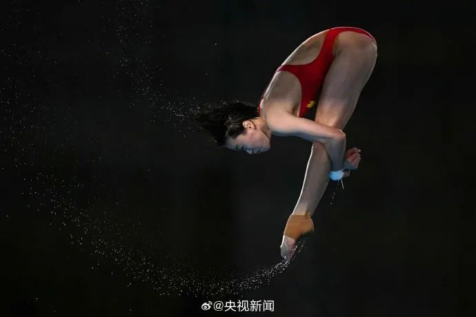
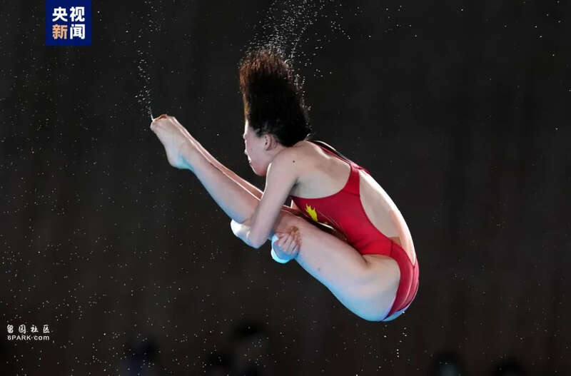
在此前已经结束的女子双人十米台决赛中，陈芋汐/全红婵搭档出场，以绝对优势夺得该项目金牌，延续了在该项目上的统治。进入单人项目，女子10米台也被认为是最没有悬念的比赛，唯一的悬念就是，究竟是哪位中国选手会站上最高领奖台。
在上一届东京奥运会上，陈芋汐搭档张家齐夺得女双十米台冠军，全红婵则一鸣惊人夺得单人十米台金牌。进入巴黎奥运周期，两人联手在单双人项目中都实现了在国际赛场的统治。尤其是在单人项目的对抗中，两人屡屡上演“神仙打架”的精彩对决，屡屡与第三名拉开“断层式”的领先优势。
总体而言，全红婵在巴黎奥运会周期的大赛单人项目较量中并不占优势。2022年的世锦赛和世界杯，陈芋汐都在单人10米台摘得金牌。
2023年世锦赛，陈芋汐再度在单人项目摘金，蝉联该项目世锦赛三连冠。不过在世界杯赛场，全红婵有所斩获。
2023年，陈芋汐在世界杯西安站和超级总决赛夺冠，但在世界杯蒙特利尔站，全红婵力压队友夺得单人10米台冠军。
而在今年2月的世锦赛上，全红婵成功在女单十米台摘金，终于加冕了奥运会、世锦赛、世界杯三大赛的单人项目大满贯。
随后，陈芋汐夺得2024年世界杯蒙特利尔站的单人十米台冠军，全红婵拿下世界杯柏林站单人项目冠军（陈芋汐本站未参加），4月份的世界杯总决赛上，陈芋汐力压全红婵在单人项目再夺一金。
来到奥运会赛场，都具备高水平的两人谁能够胜出，很大程度上取决于临场的发挥和对于紧张心态的克服情况。最终两人也再次为观众贡献了一场精彩的表演。全红婵夺得金牌后，成功实现了奥运会女子单人十米台的卫冕，并打破了伏明霞的纪录以17岁131天成为中国奥运历史上最年轻的三金王。
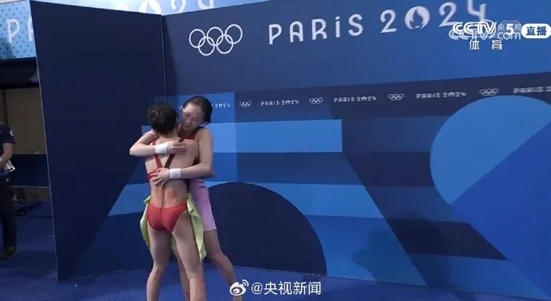
赛后，全红婵与教练陈若琳拥抱激动落泪，值得注意的是，上一个在这个项目奥运会卫冕的正是她的教练。
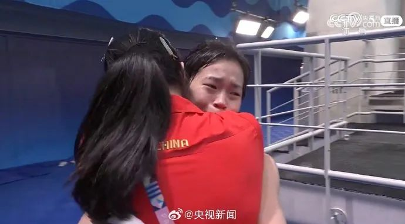
今晚，巴黎奥运会跳水女子10米跳台决赛在巴黎水上运动中心展开，全红婵、陈芋汐登场。最终，全红婵、陈芋汐实现金银牌的包揽，全红婵拿到了中国代表队的第22金。
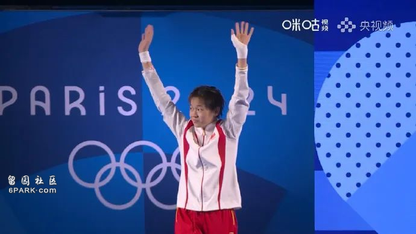
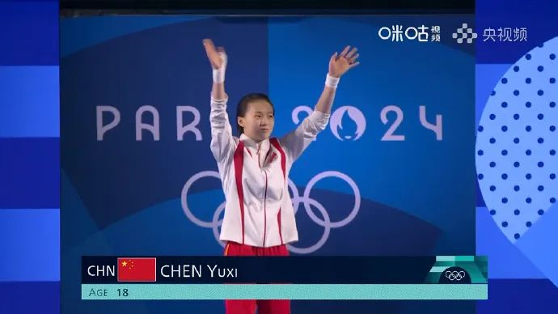
第一跳全红婵第一跳丝滑入水，解说直接惊呼，“太漂亮了，一点水花都没有！”最后，7个裁判都给了10分，全红婵第一跳拿到90.00分的满分！全场欢呼！
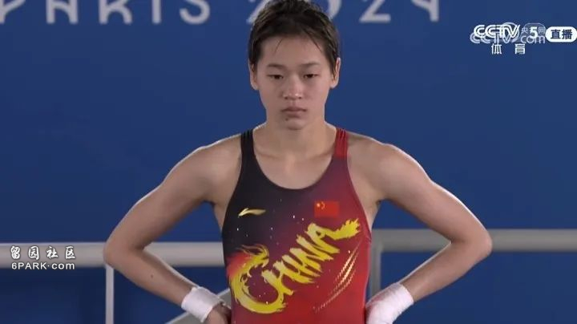
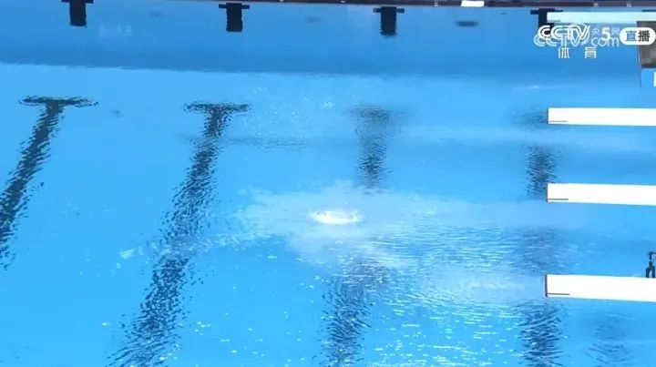
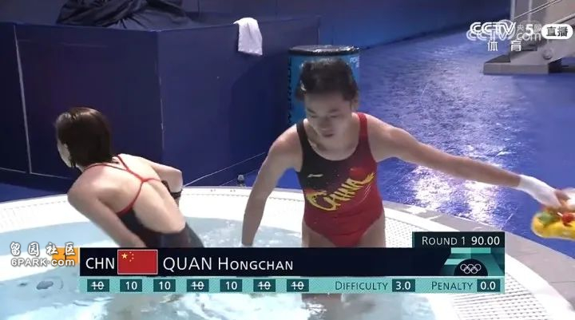
陈芋汐的第一跳也很优秀，得到了82.50分，排名第二。
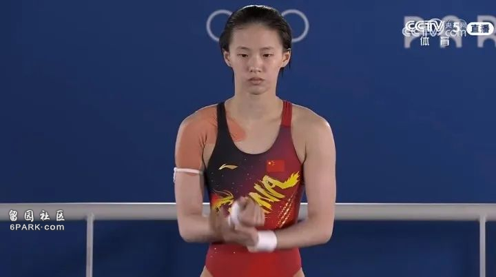
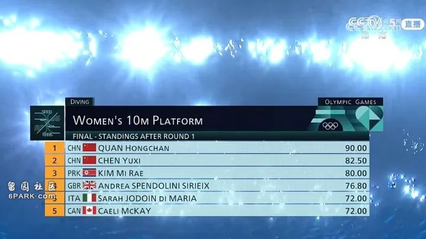
第二跳全红婵第二跳又是一个无懈可击，拿到84.80分！
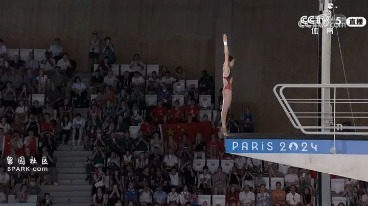
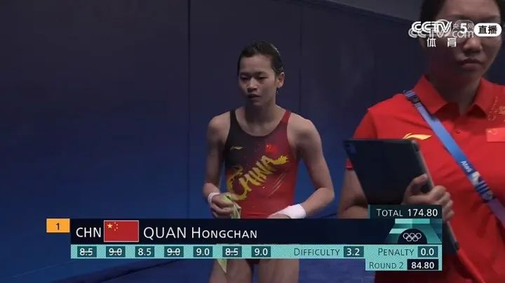
两跳过后，全红婵获得174.80分，领先第三位的朝鲜选手近30分。
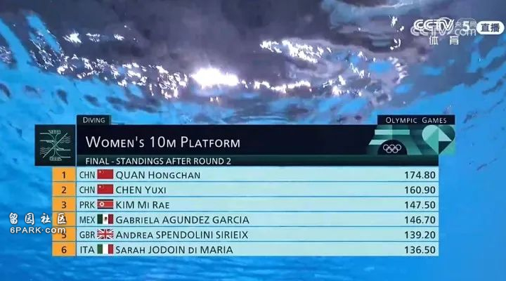
第三跳全红婵，向后翻腾两周转体一周半，得到76.80分，目前总分251.60分。陈芋汐，向后翻腾三周，得到89.10分，仅落后全红婵1.6分，暂列第二。
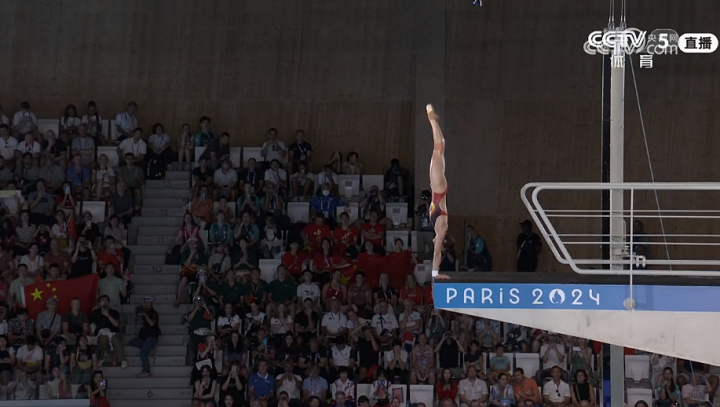
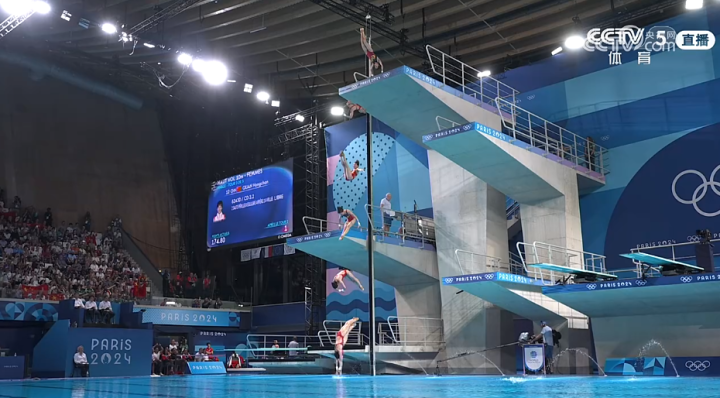
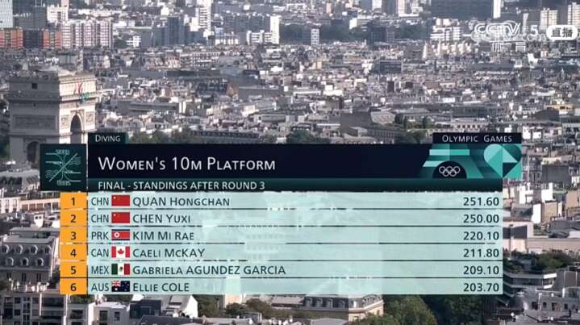
第四跳
陈芋汐，向内翻腾三周半抱膝，非常的完美，最后得分89.10分！
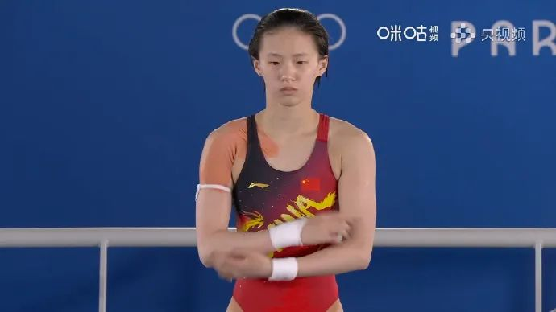
全红婵，向内翻腾三周半抱膝，同样是完美入水，最后得到了92.40分！
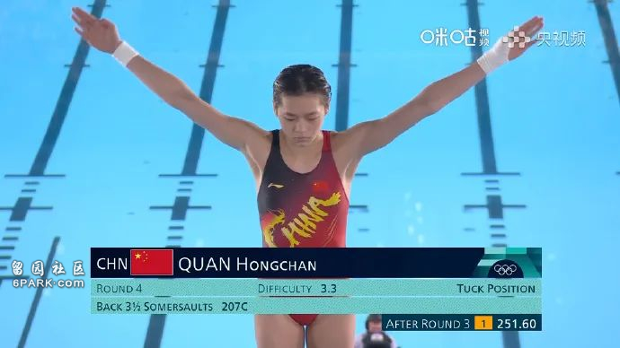
目前总分344分，依旧排名第一。
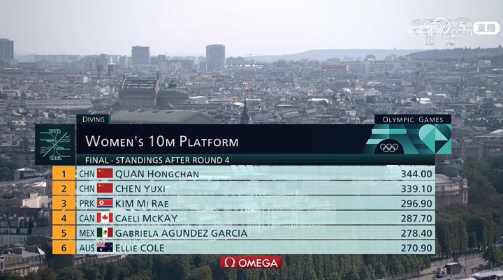
第五跳陈芋汐，向后翻腾两周半转体一周半，最后得分是81.60分，总分420.70分！
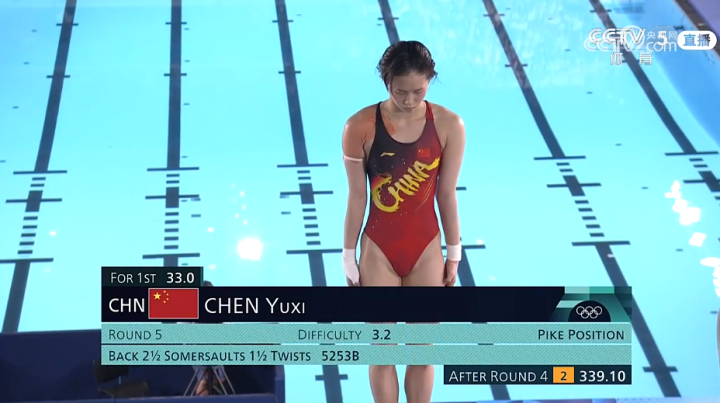
全红婵，也是向后翻腾两周半转体一周半，最后的得分是81.60，总分425.60分！
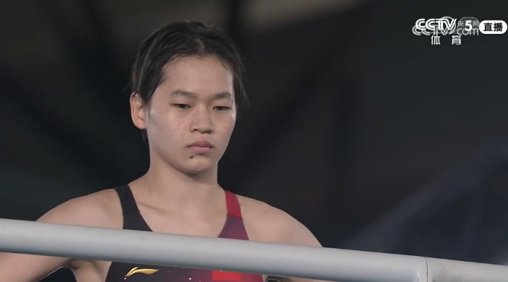
全红婵夺得金牌，成功卫冕。陈芋汐获得银牌。
网友：中国双子星都好优秀！
有关芒果的芝士：同样的动作，我觉得陈芋汐跳的已经很棒了，结果全红婵直接满分，太牛了。两个姑娘都好优秀。
好望远远风：天啊啊啊全红婵，再看一百遍她的表现还是会第一百次被震撼！第一轮满分！！！太牛了全妹。
默默大夜猫：太牛了我的天……全红婵的动作和入水无懈可击。一开始觉得朝鲜的那位选手跳得也不错，但我们的双子星完全next level。
海神落下的黄昏：太厉害了，让人叹为观止。
片片陈：我家烧水壶水开了，都咕咚得比她的水花大。
黑黑黑小兔：小全真是为跳水而生。
NetContent750ML：太厉害了，满分。
直播吧：无敌是多么寂寞！
奶晗星球：央妈解说，“要不是在前方看都不知道有人跳进去了 ”。新闻多看点
昨天，全红婵、陈芋汐以绝对优势分列前两位，晋级到了今晚的决赛。
此前，全红婵、陈芋汐已为中国代表团赢得女双10米台冠军，实现中国队在奥运会该项目上的七连冠。本次奥运会上，中国跳水“梦之队”已包揽4枚双人项目金牌。4个单人项目决赛将以6日的女台项目“揭幕”。早前报道：第7金！全红婵、陈芋汐太稳了。